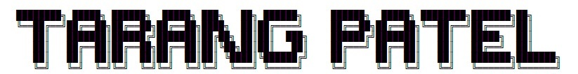

tp@dev:~$ cd About_Me/
tp@dev:~$ cat Profile
Hi , my name is {Tarang Patel}, an embedded software engineer based in Berlin,Germany. With over 6 years of experience, I specialize in making software for small chips. Whether it's µ-Processor , µ-Controller using differnt programming, I've worked with them all, making sure they run smoothly.I love diving into the world of real-time operating systems, tweaking Linux kernels, and customizing BSPs to fit different projects perfectly.But what really excites me? by use of AI with Hardware. It's about bringing smart technology right to the devices we use every day. I enjoy exploring new ways to make devices smarter and more efficient.
I have worked and collaborate on projects like audio conversion, text-to-speech, UWB, and SoC FPGAs.
Let's team up and make some awesome embedded software together..!
tp@dev:~$
tp@dev:~$ cat Experience
💼 Experience
Software Engineer , u-blox Semiconductor Berlin, Germany : Current
Master-Thesis Student , Mbition - Mercedes-Benz Innovation Lab (Daimler AG) Berlin, Germany : May 2021 – Oct 2021
Embedded Software Engineer (Working-Student) , Power Plus Communication (PPC) AG Mannheim, Germany : Dec 2020 – April 2021
Embedded Software Engineer , Danlaw Inc. Bangalore, India : Dec 2016 – April 2020
Sr. Associate Engineer (Network Support) , Tata Consultancy Services Gandhinagar, India : Nov 2015 – March 2016
tp@dev:~$
tp@dev:~$ cat Skills
🔧 Skills
Programming Languages: C, C++ Familiar: Verilog HDL, Rust, Assembly (x86, AArch64)
Open Source Software: Yocto, Linux Kernel, Android, FreeRTOS, Zephyr, Buildroot, kpatch, Tensorflow-lite,OpenCV, CommonAPI(D-bus, SOME/IP), Boost Lib., BlueZ, lwip wlan
Scripting: Bash Shell (Linux, Windows), Python3
Build Utility: CMake,Make
Protocol: UART, I2C, SPI, CAN, Modbus Wireless: Bluetooth BT/BLE, Wi-Fi and UWB
Tool: Docker, Jenkins, Keil, Wireshark, gdb, git, JIRA, LaTex, AWS (cloud9 IDE, EC2), Xilinx Vivado
Hardware: µ-Processor: i.MX Embedded Processor, NVIDIA tk1, raspberry-pi, intel NUC , µ-Controller: i.MX RT Processor (RTOS), STM32 nucleo. SoC+FPGA: UltraScale+ MPSoC (KV260)
tp@dev:~$
tp@dev:~$ cat Education
🎓 Education
Master of Engineering, Informatics (Embedded System) : Hochschule Heidelberg Heidelberg, Germany
Bachelor of Engineering, Electronics & Communication : Gujarat Technological University (GTU) Ahmedabad, India
tp@dev:~$
tp@dev:~$dmeg | grep "Competencies"
💎 Competencies: Embedded Systems, C/C++, BSP customization, System programming, Firmware 💎
tp@dev:~$
tp@dev:~$ find . -name "Projects"
GitHub Project work GitHub.
tp@dev:~$
tp@dev:~$ find . -name "Contact"
Connect me on LinkedIn.
Cheers!
tp!